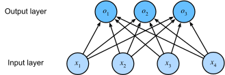

3. Logistic Regression¶
3.1. Regression and Classification¶
regression answers how much? or how many? questions, for example:
predict the number of dollors at which a house will be sold.
predict the revenue of a restaurant.
in practice, we are more often interested in classification: asking not “how much”, but “which one”:
does this email belong in the spam foler or the inbox?
does this image depict a donkey, a dog, a cat, or a rooster?
which movie is Jean most likely to watch next?
linear regression not fit to solve classification problem for two reasons:
linear regression range in \(\mathbb{R}\), while classification label is discrete.
linear regression uses euclid distance, result in d(class 3, class 1) > d(class 2, class 1), this is often not true in classification.
3.2. Logistic Regression Model¶
we first foucus on binary classification
suppose dataset \(D=\left \{ (x^{(1)},y^{(1)}),...,(x^{(n)},y^{(n)}) \right \} \), where \(x^{(i)} \in \mathbb{R}^{d},\ y^{(i)} \in \left \{ 0, 1\right \}\).
to tackle this problem, after deriving \(\theta^{T}x\)
we uses a function that transform value in \(\mathbb{R}\) into value in \([0, 1]\) and view this as the probability of being positive
we choose:
as that function, it is the so called sigmoid function, we choose sigmoid function because:
it is a monotony increase, differentiable, symmetric function that maps \(\mathbb{R}\) into \([0,1]\).
simple form
derivative can calculate easily: \({\sigma}'(x) = \sigma(x)(1 - \sigma(x))\)
now the model is:
this is the logistic regression model.
additionally, in our view, we have:
3.3. Entropy¶
self information \(I(x)\) indicates the amount of information an event \(x\) to happen.
we want \(I(x)\) to satisfy:
\(I(x) \ge 0\)
\(I(x) = 1 \text{ if }p(x)=1\)
\(\text{if }p(x_{1}) > p(x_{2}) \text{, then } I(x_{1}) < I(x_{2})\)
\(I(x_{1}, x_{2}) = I(x_{1}) + I(x_{2}) \text{ for independent }x_{1},x_{2}\)
this leads to \(I(x) = -log\ p(x)\)
while self-information measures the information of a single discrete event, entropy measures the information of a random variable:
it is exactly the optimal encoding length of \(X\).
cross entropy \(H(p, q)\) is the encoding length of \(p\) by optimal encoding of \(q\):
fix \(p\), the closer \(q\) is to \(p\), the less is \(H(p,q)\).
we can use \(H(p,q)\) to define the distance of \(q\) to \(p\).
turn to our binary classification problem, for \(y^{(i)} \in \left\{0,1\right\}, \hat{y}^{(i)} \in (0, 1)\), we have:
combine the two cases:
we use cross entropy to define the loss of logistic regression model:
this is the so called logistic regression.
in addition, we can write cross entropy loss in matrix form:
import numpy as np
from sklearn.datasets import load_iris
from sklearn.model_selection import train_test_split
iris = load_iris()
X = iris["data"][:, 2:]
y = (iris["target"] == 2).astype(np.int)
X_train, X_test, y_train, y_test = train_test_split(X, y, random_state=1)
from sklearn.linear_model import LogisticRegression
log_reg = LogisticRegression(solver="lbfgs", random_state=42)
log_reg.fit(X_train, y_train)
LogisticRegression(random_state=42)
from sklearn.metrics import accuracy_score
y_pred = log_reg.predict(X_test)
accuracy_score(y_test, y_pred)
0.9736842105263158
3.4. Probability Interpretation of Cross Entropy Loss¶
as we suppose
and
combine these two, in our prediction:
log likelikhood function:
maximum the above likelihood is equal to minimize the cross entropy loss:
3.5. Update-rule¶
we have:
the same form with linear regression!
as linear regression, we have the update rule for logistic regression:
combine all dimensions, we have:
write in matrix form： $\( \frac{\partial }{\partial \theta}J(\theta ) = X^{T}(\sigma(X\theta) -y) \)\( matrix form of update formula： \)\( \theta: =\theta - \alpha X^{T}(\sigma(X\theta)-\mathbf{y} ) \)$
3.6. Regularization¶
like linear regression, we add penalty term on \(J(\theta)\) for regularization
\(l2\) penalty： $\(J(\theta) := J(\theta) + \lambda \left \| \theta \right \|_{2}^{2} \)$
\(l1\) penalty： $\(J(\theta) := J(\theta) + \lambda \left \| \theta \right \|_{1} \)$
3.7. Softmax Regression¶
now we turn to multi-class classification.
we start off with a simple image classification problem, each input consists of a \(2\times{2}\) grayscale image, represent each pixel with a scalar, giving us features \(\left\{x_{1},x_{2},x_{3}, x_{4}\right\}\). assume each image belong to one among the categories “cat”, “chiken” and “dog”.
we have a nice way to represent categorical data: the one-hot encoding, i.e a vector with as many components as we have categories, the component corresponding to particular instance’s category is 1 and all others are 0.
for our problem, “cat” represents by \((1,0,0)\), “chicken” by \((0, 1, 0)\), “dog” by \((0, 0, 1)\).
to estimate the conditional probabilities of all classes, we need a model with multiple outputs, one per class.
address classification with linear models, we will need as many affine functions as we have outputs:
depict as:

we would like output \(\hat{y_{j}}\) to be interpreted as probability that a given item belong to class \(j\).
to transform our current outputs \(\left\{o_{1},o_{2},o_{3},o_{4}\right\}\) to probability distribution \(\left\{\hat{y}_{1},\hat{y}_{2},\hat{y}_{3},\hat{y}_{4}\right\}\), we use the softmax operation:
when predicting:
\(\hat{y}_{j}\) is necessary when compute loss.
as logistic regression, we use the cross entropy loss:
now complete the construction of softmax regression.
y = iris["target"]
X_train, X_test, y_train, y_test = train_test_split(X, y, random_state=1)
softmax_reg = LogisticRegression(multi_class="multinomial", solver="lbfgs", C=10)
softmax_reg.fit(X_train, y_train)
LogisticRegression(C=10, multi_class='multinomial')
y_pred = softmax_reg.predict(X_test)
accuracy_score(y_test, y_pred)
0.9736842105263158